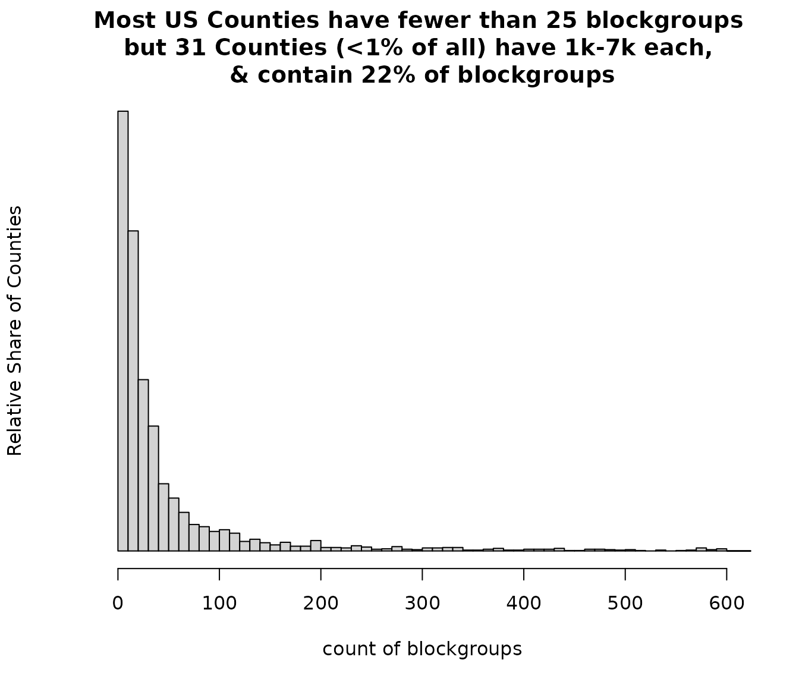

Perspectives on US Counties and how skewed population distributions are
A few large counties contain a large proportion of the US population. This vignette briefly explores the distribution of counties in the US, particularly how many counties have a large number of block groups and residents.
Note there are also guides to using EJAM in R for County/FIPS analysis and reference documents on relevant R functions and county-related test data.
The US has over 3,200 Counties but the 80/20 rule applies almost exactly – About 80% of the population is in just 20% of all Counties. In fact, most of the US population lives in less than 5% of all US Counties. About 150 counties account for most of the US residents.
# code to get stats on population and blockgroup counts by county
z <- blockgroupstats[ , .(pop = sum(pop), bgcount = .N),
by = .(countyfips = substr(bgfips,1,5))][order(bgcount), ]
z[ , name := fips2name(countyfips)]
data.table::setcolorder(z, "countyfips", after = NCOL(z))
data.table::setcolorder(z, "bgcount")
data.table::setorder(z, -bgcount)
# percent of residents and percent of counties
zz <- z[order(-pop), ]
zz$cumpop = cumsum(zz$pop)
zz$cumpctpop = round(100 * zz$cumpop / sum(zz$pop),1)
zz[, cumpctcounties := round(100 * .I/NROW(zz), 1) ]
which(zz$cumpctpop >= 50 )[1]
#> [1] NA
zz[cumpctpop >= 50, ][1, .(cumpctpop, cumpctcounties)]
#> cumpctpop cumpctcounties
#> <num> <num>
#> 1: NA NAMap of counties with at least 1 million residents each
# code to show the map of key counties
suppressWarnings({ suppressMessages({
shp1 <- shapes_from_fips(fips = z[pop >= 1e6, ]$countyfips)
shp1 <- cbind(shp1, pop = z[pop >= 1e6, ]$pop)
mapfast(shp1)
})})
## to see the map of key counties in a web browser:
# mp <- mapfast(shp1, launch_browser = TRUE)Histogram showing county population is usually between 10 thousand and 100 thousand, but can be much less or much more fairly often.
hist(log10(z$pop), 1000 , axes=F,
xlab="Log scale of population count by county",
main = "Population size varies greatly across US Counties")
axis(side = 1, at = 2:7,
labels = c(100, '1,000','10 thousand', '100 thousand',
"1 million", "10 m")) Scatterplot of population and # of blockgroups, by county
plot(z$bgcount, z$pop,
xlab = "# of blockgroups in the county",
ylab = "County population", log = 'xy')Map of counties with more than 1,000 blockgroups each
shp2 <- cbind(
shapes_from_fips(fips = z[bgcount >= 1000, ]$countyfips),
blockgroup_count = z[bgcount >= 1000, ]$bgcount)
suppressMessages(suppressWarnings({
mapfast(shp2)
## to see the map of key counties in a web browser:
# mp <- mapfast(shp2, launch_browser = TRUE)
}))A handful of counties have over 1,000 block groups each, while most counties have less than 25 block groups each. These are the largest counties in terms of how many blockgroups they contain:
x = data.frame(z[bgcount >= 1000, ])
x$pop = prettyNum(x$pop, big.mark = ",")
x$bgcount = prettyNum(x$bgcount, big.mark = ",")
print(x)
#> bgcount pop name countyfips
#> 1 6,591 9,936,690 Los Angeles County, CA 06037
#> 2 4,002 5,225,367 Cook County, IL 17031
#> 3 2,830 4,726,177 Harris County, TX 48201
#> 4 2,806 4,430,871 Maricopa County, AZ 04013
#> 5 2,156 2,679,620 Kings County, NY 36047
#> 6 2,058 3,289,701 San Diego County, CA 06073
#> 7 2,049 3,175,227 Orange County, CA 06059
#> 8 1,843 2,688,237 Miami-Dade County, FL 12086
#> 9 1,803 2,360,826 Queens County, NY 36081
#> 10 1,570 2,604,053 Dallas County, TX 48113
#> 11 1,545 2,254,371 King County, WA 53033
#> 12 1,507 1,781,641 Wayne County, MI 26163
#> 13 1,394 2,429,487 Riverside County, CA 06065
#> 14 1,338 1,593,208 Philadelphia County, PA 42101
#> 15 1,325 2,265,926 Clark County, NV 32003
#> 16 1,292 1,645,867 New York County, NY 36061
#> 17 1,275 2,180,563 San Bernardino County, CA 06071
#> 18 1,246 2,113,854 Tarrant County, TX 48439
#> 19 1,185 1,256,620 Cuyahoga County, OH 39035
#> 20 1,182 1,443,229 Bronx County, NY 36005
#> 21 1,176 1,623,109 Middlesex County, MA 25017
#> 22 1,173 1,916,831 Santa Clara County, CA 06085
#> 23 1,139 1,389,160 Nassau County, NY 36059
#> 24 1,139 2,014,059 Bexar County, TX 48029
#> 25 1,134 1,663,823 Alameda County, CA 06001
#> 26 1,121 1,940,907 Broward County, FL 12011
#> 27 1,098 1,270,787 Hennepin County, MN 27053
#> 28 1,062 1,245,310 Allegheny County, PA 42003
#> 29 1,060 1,272,264 Oakland County, MI 26125
#> 30 1,058 1,524,486 Suffolk County, NY 36103
#> 31 1,024 1,579,211 Sacramento County, CA 06067
# print( z[bgcount >= 1000, ][] )Histogram showing that most counties have fewer than 25 blockgroups, but a few have over 1000 each
hist(z$bgcount, breaks = c((0:60)*10,10000), xlim=c(0, 600),
main = "Most US Counties have fewer than 25 blockgroups
but 31 Counties (<1% of all) have 1k-7k each,
& contain 22% of blockgroups",
xlab = "count of blockgroups",
ylab = "Relative Share of Counties", yaxt="n")